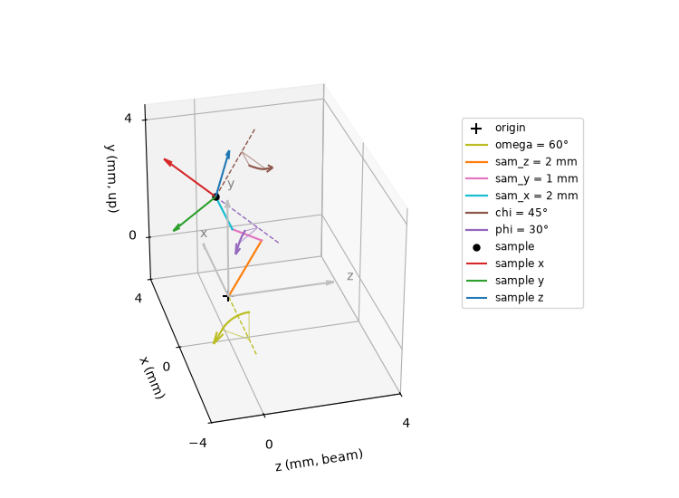

Note
Go to the end to download the full example code.
Goniometer¶
Position a sample mounted on a goniometer in the NeXus coordinate system.
The sample is oriented as follows
where
\(R(\vec{v},a)\) is a rotation around vector \(\vec{v}\) with angle \(a\)
\(T(\vec{u},t)\) is a translation along vector \(\vec{u}\) over a distance \(t\)
\(X_s\) a coordinate in the sample reference frame
entry:NXentry
sample:NXsample
depends_on=transformations/phi
transformations:NXtransformations
phi=30
@depends_on=chi
@transformation_type=rotation
@vector=[-1 0 0]
@units=degrees
chi=45
@depends_on=sam_x
@transformation_type=rotation
@vector=[0 0 1]
@units=degrees
sam_x=2
@depends_on=sam_y
@transformation_type=translation
@vector=[1 0 0]
@units=mm
sam_y=1
@depends_on=sam_z
@transformation_type=translation
@vector=[0 1 0]
@units=mm
sam_z=2
@depends_on=omega
@transformation_type=translation
@vector=[0 0 1]
@units=mm
omega=60
@depends_on=.
@transformation_type=rotation
@vector=[-1 0 0]
@units=degrees
The figure shows the result of this chain in the laboratory frame.
The legend lists the motors as they are stacked, from omega at the bottom (it
depends on .) to phi at the top (the sample depends on it).
The silver arrows are the laboratory axes and the red, green and blue arrows the sample axes. Only the sample axes have moved: the transformations are active, they move the object and leave the laboratory frame where it is.
The three translations are the straight segments running from the origin to the sample. Every step is drawn in the frame set up by the transformations it depends on, so
sam_zis already rotated byomega.Every rotation is drawn as an arc around its own axis (dashed line), swept in the direction of increasing angle. The axis of
omegapasses through the laboratory origin becauseomegadepends on., while the axes ofchiandphiare carried along by the transformations they depend on.
phi and omega are declared with the same @vector=[-1 0 0], yet their axes
are 45 degrees apart in the figure. A vector is expressed in the frame the axis
depends on, not in the laboratory frame: phi sits on top of chi, so the
laboratory direction of the phi axis is rotated by chi=45. Only omega, at
the bottom of the stack, has its vector directly in the laboratory frame. The
translations in between do not reorient anything, and omega cannot reorient its
own axis, so chi is the only transformation separating the two.

# Transformations
import numpy as np
def rotation(vector: list, angle: float) -> np.ndarray:
"""Active 4x4 rotation matrix around ``vector`` over ``angle`` degrees."""
direction = np.asarray(vector, float)
direction = direction / np.linalg.norm(direction)
radians = np.deg2rad(angle)
cosine, sine = np.cos(radians), np.sin(radians)
cross = np.array(
[
[0, -direction[2], direction[1]],
[direction[2], 0, -direction[0]],
[-direction[1], direction[0], 0],
]
)
matrix = np.eye(4)
matrix[:3, :3] = (
np.eye(3) * cosine
+ sine * cross
+ (1 - cosine) * np.outer(direction, direction)
)
return matrix
def translation(vector: list, distance: float) -> np.ndarray:
"""Active 4x4 translation matrix along ``vector`` over ``distance``."""
direction = np.asarray(vector, float)
matrix = np.eye(4)
matrix[:3, 3] = direction / np.linalg.norm(direction) * distance
return matrix
def to_lab(matrix: np.ndarray, points: np.ndarray) -> np.ndarray:
"""Transform the Nx3 ``points`` with the 4x4 ``matrix``."""
homogeneous = np.column_stack([points, np.ones(len(points))])
return (matrix @ homogeneous.T).T[:, :3]
def arc(axis: list, angle: float, start: np.ndarray, steps: int = 60) -> np.ndarray:
"""Arc of ``angle`` degrees around ``axis``, starting at ``start``."""
direction = np.asarray(axis, float)
direction = direction / np.linalg.norm(direction)
begin = np.append(np.asarray(start, float), 1.0)
return np.array(
[
(rotation(direction, value) @ begin)[:3]
for value in np.linspace(0.0, angle, steps)
]
)
ORIGIN = np.zeros((1, 3))
phi_axis, phi_angle = [-1, 0, 0], 30
chi_axis, chi_angle = [0, 0, 1], 45
omega_axis, omega_angle = [-1, 0, 0], 60
sam_x_axis, sam_x_distance = [1, 0, 0], 2
sam_y_axis, sam_y_distance = [0, 1, 0], 1
sam_z_axis, sam_z_distance = [0, 0, 1], 2
# The first transformation of the chain is applied first
phi = rotation(phi_axis, phi_angle)
chi = rotation(chi_axis, chi_angle)
sam_x = translation(sam_x_axis, sam_x_distance)
sam_y = translation(sam_y_axis, sam_y_distance)
sam_z = translation(sam_z_axis, sam_z_distance)
omega = rotation(omega_axis, omega_angle)
sample_to_lab = omega @ sam_z @ sam_y @ sam_x @ chi @ phi
# A transformation acts in the frame set up by the transformations it depends on
base_frame = {
"phi": omega @ sam_z @ sam_y @ sam_x @ chi,
"chi": omega @ sam_z @ sam_y @ sam_x,
"sam_x": omega @ sam_z @ sam_y,
"sam_y": omega @ sam_z,
"sam_z": omega,
"omega": np.eye(4),
}
# Plot
import matplotlib.pyplot as plt # noqa E402
AXIS_COLORS = ["tab:red", "tab:green", "tab:blue"]
AXIS_LABELS = ["x", "y", "z"]
def to_view(points: np.ndarray) -> np.ndarray:
"""Reorder NeXus (x, y, z) for plotting, so that y is the vertical axis."""
return np.atleast_2d(points)[:, [2, 0, 1]]
sample = to_lab(sample_to_lab, ORIGIN)
fig = plt.figure(figsize=(7.5, 5.5))
ax = fig.add_subplot(projection="3d")
ax.view_init(elev=30, azim=-105)
ax.scatter(0, 0, 0, color="black", marker="+", s=80, label="origin")
# The laboratory axes stay put
for index, label in enumerate(AXIS_LABELS):
direction = np.eye(3)[index]
ax.quiver(
0, 0, 0, *to_view(direction * 3.2)[0], color="silver", arrow_length_ratio=0.08
)
ax.text(*to_view(direction * 3.6)[0], label, color="gray")
# The motors, drawn and listed in the legend from the bottom of the stack (the end of
# the chain) to the top (the axis the sample depends on). Rotations carry the radius
# at which their arc is drawn, translations do not.
for name, axis, value, unit, radius, color in [
("omega", omega_axis, omega_angle, "\N{DEGREE SIGN}", 2.4, "tab:olive"),
("sam_z", sam_z_axis, sam_z_distance, " mm", None, "tab:orange"),
("sam_y", sam_y_axis, sam_y_distance, " mm", None, "tab:pink"),
("sam_x", sam_x_axis, sam_x_distance, " mm", None, "tab:cyan"),
("chi", chi_axis, chi_angle, "\N{DEGREE SIGN}", 1.6, "tab:brown"),
("phi", phi_axis, phi_angle, "\N{DEGREE SIGN}", 1.6, "tab:purple"),
]:
frame = base_frame[name]
direction = np.asarray(axis, float)
direction = direction / np.linalg.norm(direction)
label = f"{name} = {value}{unit}"
if radius is None:
# The step this motor adds to the stack, in the frame it depends on
segment = to_lab(frame, np.array([[0, 0, 0], direction * value]))
ax.plot(*to_view(segment).T, color=color, linewidth=1.6, label=label)
continue
reference = [0, 1, 0] if abs(direction[2]) > 0.9 else [0, 0, 1]
start = np.cross(direction, reference)
start = start / np.linalg.norm(start) * 0.9
line = to_lab(frame, np.array([[0, 0, 0], direction * (radius + 0.8)]))
ax.plot(*to_view(line).T, color=color, linestyle="--", linewidth=1.0)
local = arc(axis, value, start) + direction * radius
# Radii from the rotation axis to both ends of the arc, marking the swept angle
sector = to_lab(frame, np.array([local[0], direction * radius, local[-1]]))
ax.plot(*to_view(sector).T, color=color, linewidth=0.8, alpha=0.6)
points = to_lab(frame, local)
ax.plot(*to_view(points).T, color=color, linewidth=1.6, label=label)
tangent = points[-1] - points[-2]
ax.quiver(
*to_view(points[-1])[0],
*to_view(tangent / np.linalg.norm(tangent) * 0.5)[0],
color=color,
arrow_length_ratio=0.8,
)
# The sample axes are the laboratory axes moved by the chain: this is what the active
# transformation convention means
ax.scatter(*to_view(sample)[0], color="black", s=25, label="sample")
for index, (label, color) in enumerate(zip(AXIS_LABELS, AXIS_COLORS)):
ax.quiver(
*to_view(sample)[0],
*to_view(sample_to_lab[:3, :3] @ np.eye(3)[index] * 2.0)[0],
color=color,
arrow_length_ratio=0.15,
label=f"sample {label}",
)
# The plot axes are the NeXus z, x and y axes, so that y points up
ax.set(xlabel="z (mm, beam)", ylabel="x (mm)", zlabel="y (mm, up)")
ax.set_xlim(-1.5, 4)
ax.set_ylim(-4, 4)
ax.set_zlim(-1.5, 4.5)
ax.set_xticks([0, 4])
ax.set_yticks([-4, 0, 4])
ax.set_zticks([0, 4])
ax.set_aspect("equal")
ax.legend(loc="center left", bbox_to_anchor=(1.0, 0.6), fontsize="small")
fig.subplots_adjust(left=0.0, right=0.78)
plt.show()
Total running time of the script: (0 minutes 0.107 seconds)